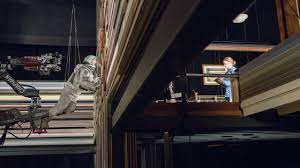
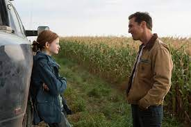
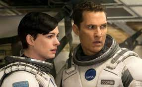
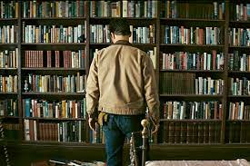

CURIOSIDADES
Instrução às Cegas
O compositor Hans Zimmer foi instruído por Christopher Nolan a fazer uma distinta trilha sonora. "É hora de reinventar. A sequência interminável precisa seguir outro caminho, os grandes sons estão, provavelmente, armazenados." Nolan não forneceu a Zimmer um script ou quaisquer detalhes da trama, para que ele pudesse escrever a música para o filme, ao invés disso, deu ao compositor "uma página de texto", que "tinha mais a ver com a história do que o enredo do filme".
Substituição fotográfica
Este é o primeiro filme de Christopher Nolan desde Following (1998) a não ser filmado pelo diretor de fotografia, Wally Pfister, que estava ocupado com sua estreia na direção, o longa Transcendence: A Revolução (2014). Nolan contratou o diretor de fotografia Hoyte Van Hoytema para substituir Pfister.
Influências espaciais
Christopher Nolan descreveu o filme como "uma ode ao voo espacial humano"; ele cita os "filmes espaciais" 2001 - Uma Odisséia no Espaço (1968), Guerra nas Estrelas (1977), Contatos Imediatos do Terceiro Grau (1977), Alien, o Oitavo Passageiro (1979) e Blade Runner, o Caçador de Androides (1982) como uma influência para o longa.
Efeito "buraco negro"
Christopher Nolan ficou inicialmente preocupado que, uma representação cientificamente precisa de um buraco negro não seria facilmente retratado para o público comum. No entanto, Nolan encontrou o efeito final para ser explicável desde que ele mantivesse perspectivas de câmera consistentes: "Enquanto nós não mudássemos muito o ponto de vista / a posição da câmera, poderíamos obter algo muito compreensível."
